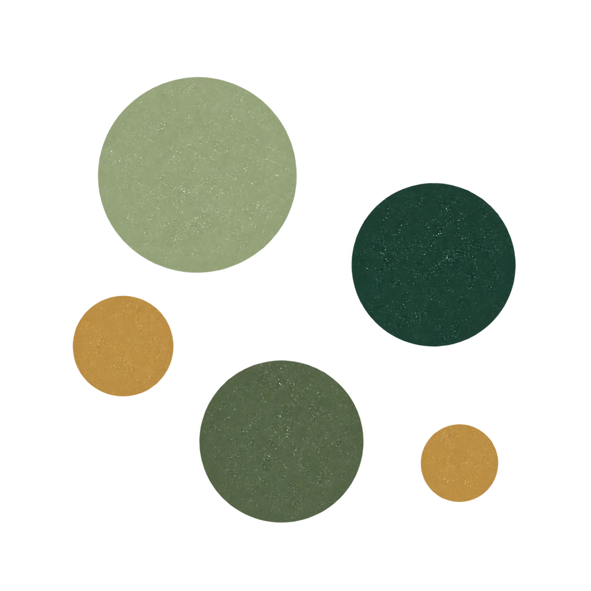
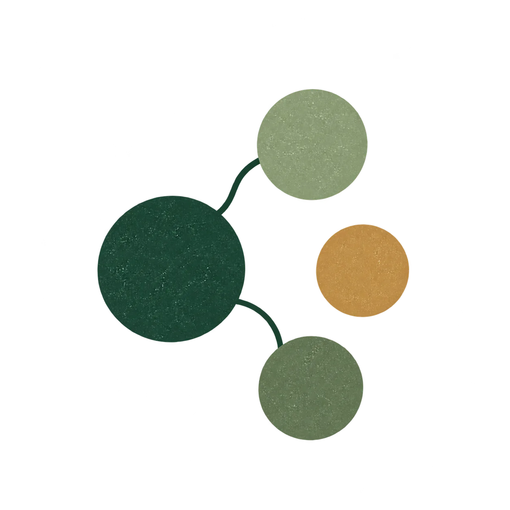

Head of Food Ferments, Escarpment Laboratories
Led product and business-model work across koji, tempeh and beverage fermentation, and supported research, commercialization and funding efforts totalling more than $160,000.
ServicesFood & beverage product development
Formulation, fermentation and process development for food and beverage producers. I plan the trials, run or review them, and write down how the product is made so your team can repeat it.

When this helps
A batch comes out differently each time. A recipe works in the kitchen but not at a larger size. A ferment develops a flavour or texture nobody can explain. A new product idea needs testing before you commit to it.
I help you work out what to test, run trials that give readable results, and turn what you learn into a process your team can follow.
Discuss a product projectHow a product project runs
I use the scientific method: define the question, change a small number of things on purpose, hold the rest steady, and record what happens. Not every combination gets tested, so the results stay readable.

Review your current recipe, process notes, batch records and photos. Agree what a better result looks like.
A short list of the variables most likely to matter.

Plan a small set of controlled samples that test the highest-priority variables.
A trial plan with what changes, what stays fixed and what we’ll measure.

Set up the trials and track aroma, texture, flavour and anything that goes wrong. Bench-scale trials can run on my side, so your team doesn’t have to.
Dated observations for each sample.

Summarize what the trials showed, recommend a stronger base process and name the next decision.
A written summary and a documented process.
Experience
Past roles and projects behind this service.
Led product and business-model work across koji, tempeh and beverage fermentation, and supported research, commercialization and funding efforts totalling more than $160,000.
Wrote and secured $62,500 in funding for koji and tempeh research and development.
Taught fermentation through Le Cordon Bleu Ottawa and Ottawa Culture Club workshops, explaining technical work to culinary students, chefs and home cooks.
Before we start
You do. You keep your recipes, product ideas and process records. We can sign a mutual confidentiality agreement before you share recipe or process details.
When outside lab testing would help, such as identifying a microbe, I’ll recommend what to test for and the cost is approved before anything is ordered. Regulatory, food-safety and labelling review aren’t part of product development work, and we’ll name where you need a specialist.
Not always. Fermentation varies with ingredients, temperature, equipment and scale. Bench trials give you a controlled comparison point; your own production batches still need checking.
The proposal sets out the trials, timeline, fee and direct costs such as ingredients, vessels or lab testing, so you know the full picture before we start.
Let’s talk
Describe the process, product or project. We’ll discuss whether I can help.